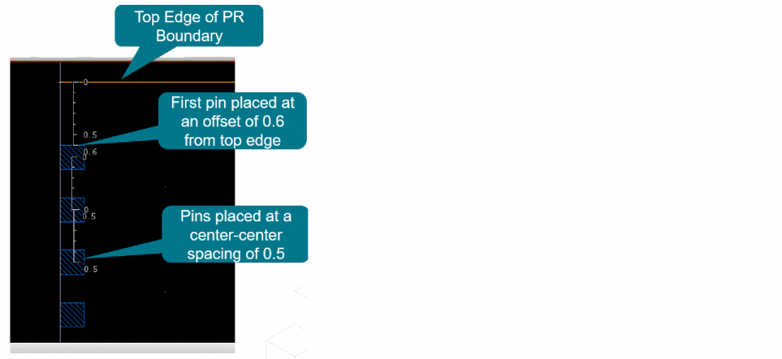
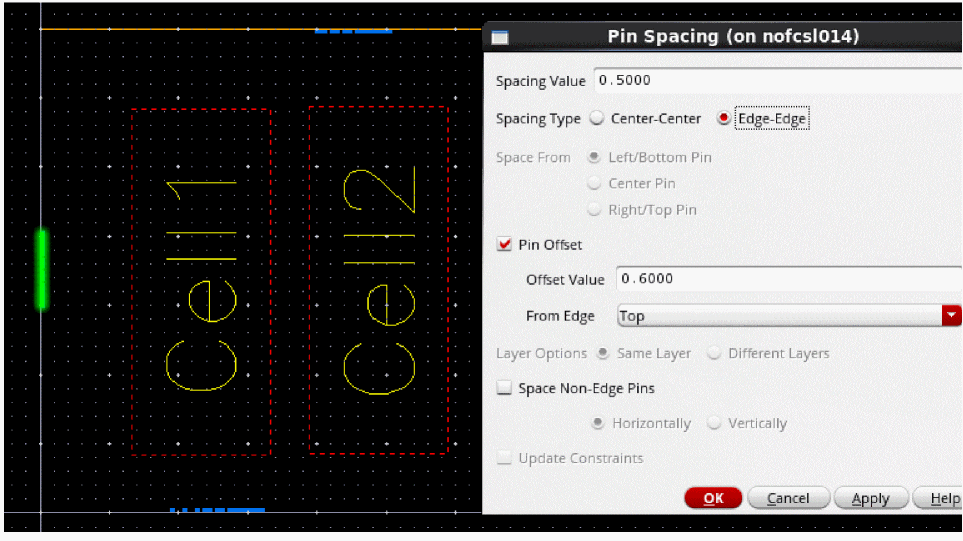
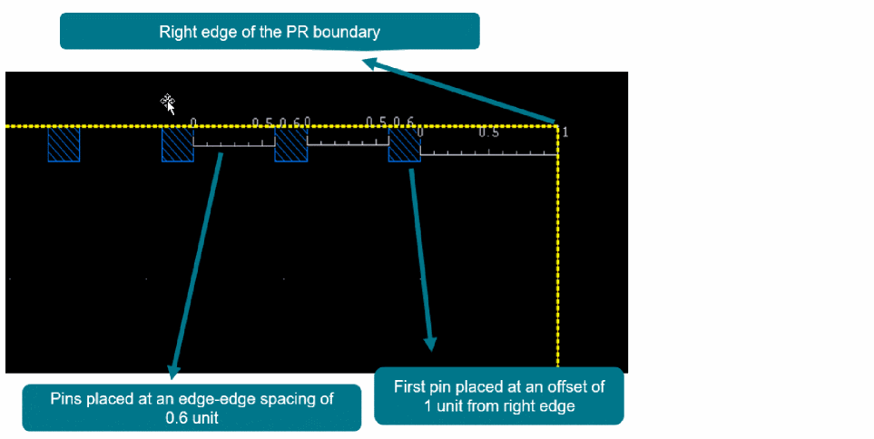

Applying Uniform Pin Spacing Using the Pin Tool
(Virtuoso Layout Suite EXL) Use the Pin Spacing form to define the spacing between adjacent pins that are assigned to the same edge and are present on the same layer. You can use this option to spread pins uniformly along an edge. The form also lets you define spacing between non-edge pins.
- Select the required pins in the design canvas. The selected pins must be on the same layer and assigned to the same edge.
- Choose Plan – Pin Planning – Pin Tool. The Pin Browser is displayed.
-
Choose Place – Pin Spacing. The Pin Spacing form is displayed.
- Specify the required pin spacing value in the Spacing Value field.
- In the Spacing Type section, select the points to which the spacing value is to be applied. You can select Center-Center to apply the spacing value between the centers of adjacent pins or select Edge-Edge to apply the spacing value between the adjoining edges of adjacent pins.
-
In the Space From section, select the reference pin from which spacing values are to be applied. The available options are: Left/Bottom Pin, Center Pin, and Right/Top Pin.
For pins on the horizontal edge, left, center, or right pin can be used as the reference pin. For pins on the vertical edge, bottom, center, or top pin can be used as the reference pin. -
Select Pin Offset to set the pin spacing offset value from the specified PR boundary edge.
- In Offset Value, specify the required pin offset distance from the edge.
-
In From Edge, specify the reference edge where you want to place the selected pin in the layout. The available options are: Left, Right, Top, and Bottom.
The following table lists the valid scenarios where you can set the pin offset value for edge and non-edge pins. Pin Offset “From Edge” value Valid PR boundary edges for edge pins Valid “Space Non-Edge Pins” value for non-edge pins
Example1: In the following example, the spacing value is set as0.5, the spacing type is set to Center-Center, and an offset value of0.6is provided from the top edge, as the pins are located on the left edge.
As a result, the first pin is placed at an offset of0.6from the top edge of the PR boundary, and the center-to-center spacing between each pin is0.5as shown in the following image.
Example 2: In the following example, the spacing type is set to Edge-Edge.
As a result, the first pin is placed at an offset of0.6from the top edge of the PR boundary, and the edge-to-edge spacing between each of the pins is0.5as shown in the image below.
Example 3: In the following example, the spacing value is set as0.6, the spacing type is set to Edge-Edge, and an offset value of1.0is provided from the right edge, as the pins are located on the top edge.
As a result, the first pin is placed at an offset of1from the right edge of the PR boundary, and the edge-to-edge spacing between each of the pins is0.6as shown in the following image.
Example 4: In the following example, the spacing value is set as0.6, the spacing type is set to Edge-Edge, and an offset value of1.0is provided from the bottom edge, as the pins are located on the right edge. In Space Non-Edge Pins, the spacing can only be set to Vertically because the pins have a spacing distance from the top or bottom edge.
If you try to give a horizontal offset, an error message is displayed as follows:
*WARNING* Cannot space the pin horizontally as the selected non-edge pin <%s>:<%s>:<%s> is placed at an offset from the top edge. The selected pin can only be spaced vertically. To enable vertical spacing, choose 'Vertically' and re-run the command.
As a result, the first pin is placed at an offset of1from the bottom edge of the PR boundary, and the edge-to-edge spacing between each of the pins is0.6as shown in the image below.
Example 5: In the following example, the pins are located on the left edge, the spacing value is set as0.6, and an offset value of1.0is provided from the left edge.
An error message is displayed as follows:*WARNING* Cannot place pin <%s>:<%s>:<%s> at an offset from the left edge, as the pin is not present on the top or bottom edge of the PR boundary. Select a pin on the top or bottom edge of the PR boundary to place it at an offset from the left edge and re-run the command.
- In the Layer Options section, specify the layer in which pin spacing settings must be applied for the selected pins. You can now apply pin spacing for same or different metal layers.
-
Select Space Non-Edge Pins to apply the specified spacing settings to all pins, irrespective of whether they are assigned to edges.
When this option is not selected, the form settings are applied only to pins that are assigned to edges. - Specify the direction in which spacing is to be applied for non-edge pins: Horizontal or Vertical.
- Select Update Constraints to automatically update any constraints, for example, distance constraint, associated with the selected pins.
- Click Apply to apply the spacing values.
The following figure shows how a pin spacing value is applied to a set of adjacent pins.
Related Topics
Return to top